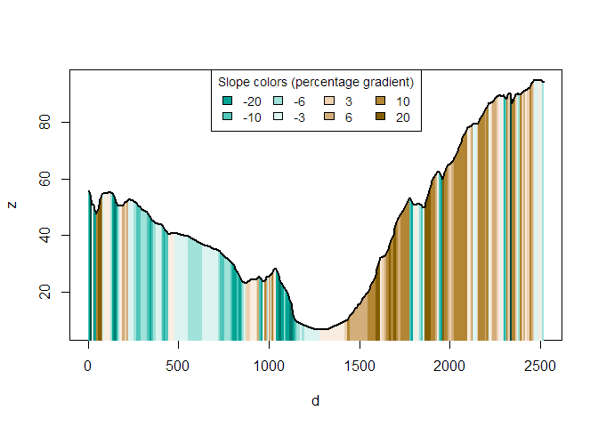

The slopes R package calculates the slope (longitudinal steepness, also known as gradient) of roads, rivers and other linear (simple) features, based on two main inputs:
-
vector linestring geometries defined by classes in the
sfpackage -
raster objects with pixel values reporting average height, commonly known as digital elevation model (DEM) datasets, defined by classes in the
rasteror more recentterrapackages
Data on slopes are useful in many fields of research, including hydrology, natural hazards (including flooding and landslide risk management), recreational and competitive sports such as cycling, hiking, and skiing. Slopes are also also important in some branches of transport and emissions modelling and ecology. See the intro-to-slopes vignette for details on fields using slope data and the need for this package.
This README covers installation and basic usage. For more information about slopes and how to use the package to calculate them, see the get started and the introducion to slopes vignette.
How it works
The package takes two main types of input data for slope calculation: - vector geographic objects representing linear features, and - elevation values from a digital elevation model representing a continuous terrain surface or which can be downloaded using functionality in the package
The package can be used with two sources of elevation data: - openly available elevation data via an interface to the ceramic package, enabling estimation of hilliness for routes anywhere worldwide even when local elevation data is lacking. The package takes geographic lines objects and returns elevation data per vertex (providing the output as a 3D point geometry in the sf package by default) and per line feature (providing average gradient by default). - an elevation model, available on your machine.
Getting started
Installation
Install the development version from GitHub with:
# install.packages("remotes")
remotes::install_github("ropensci/slopes")Installation for DEM downloads
If you do not already have DEM data and want to make use of the package’s ability to download them using the ceramic package, install the package with suggested dependencies, as follows:
# install.packages("remotes")
remotes::install_github("ropensci/slopes", dependencies = "Suggests")Furthermore, you will need to add a MapBox API key to be able to get DEM datasets, by signing up and registering for a key at https://account.mapbox.com/access-tokens/ and then following these steps:
usethis::edit_r_environ()
MAPBOX_API_KEY=xxxxx # replace XXX with your api keyBasic examples
Load the package in the usual way. We will also load the sf library:
The minimum input data requirement for using the package is an sf object containing LINESTRING geometries, as illustrated below (requires a MapBox API key):
sf_linestring = lisbon_route # import or load a linestring object
sf_linestring_xyz = elevation_add(sf_linestring) # dem = NULL
#> Loading required namespace: ceramic
#> Preparing to download: 12 tiles at zoom = 12 from
#> https://api.mapbox.com/v4/mapbox.terrain-rgb/With the default argument dem = NULL, the function downloads the necessary elevation information from Mapbox. You can also this use a local digital elevation model (dem = ...), as shown in the example below:
sf_linestring_xyz_local = elevation_add(sf_linestring, dem = dem_lisbon_raster)In both cases you can obtain the average gradient of the linestring with slope_xyz() and plot the elevation profile with plot_slope() as follows:
slope_xyz(sf_linestring_xyz_local)
#> 1
#> 0.07817098
plot_slope(sf_linestring_xyz_local)
See more functions in Get started vignette.
Code of Conduct
Please note that this package is released with a Contributor Code of Conduct. By contributing to this project, you agree to abide by its terms.